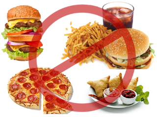

Healthy and Unhealthy food
-
Healthy food Importance

A healthy diet is essential for good health and nutrition. It protects you against many chronic noncommunicable diseases, such as heart disease, diabetes and cancer. An example of a heealthy diet is fruits, vegetables, and other vitams and protiens. Eating a variety of foods and consuming less salt, sugars and saturated and industrially-produced trans-fats, are essential for healthy diet if you want to lose weight.
-
Effects of Unhealthy food
Any food that is high in calories, with very little protein is junk food. We should not be eating this on a regular basis as it is not good at all for our bodies. Junk food includes things like burgers, fries, etc.. and it is the total opposite of healthy food. Junk food is also normally fried but can be in other different ways too. If you want to lose weight and eat healthy, follow the diet above and don't eat too much junk food. Otherwise it may cause problems for you and you body.